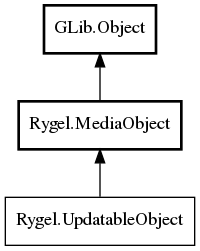

UpdatableObject
Object Hierarchy:
Description:
This interface should be implemented by 'updatable' objects - ones that allow modifying their own metadata in some persistent storage.
Namespace: Rygel
Package: librygel-server
Content:
Methods:
Inherited Members:
All known members inherited from class Rygel.MediaObject

All known members inherited from class GLib.Object